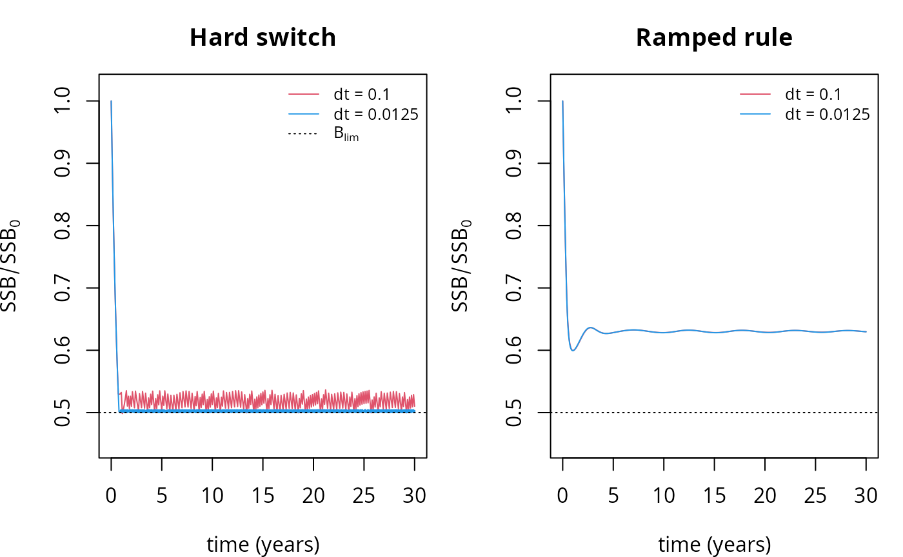
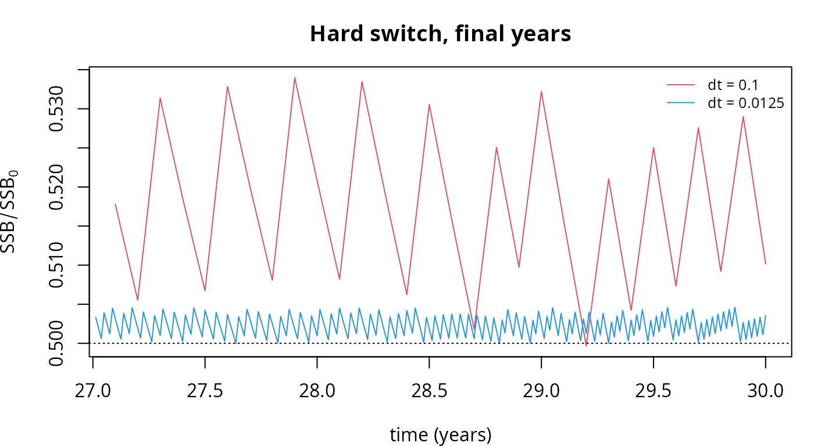

Introduction
setRateFunction() lets you replace any of mizer’s
built-in rate functions with one of your own. Sooner or later this
tempts you into writing a rate that switches abruptly on the state of
the model — a fishery that closes when a stock falls below a limit
reference point, a predator that switches diet when its preferred prey
becomes scarce, a mortality that kicks in below a critical condition, a
species declared extinct below a threshold abundance.
Such a rate is a discontinuous function of the
abundances n. This vignette shows what goes wrong
when you do that, why none of mizer’s time-stepping methods can rescue
you, and how to fix it. The fix is short — round the corner off the
switch — so if you only read one section, read Regularise the switch.
The trouble is worth spelling out because it is quiet. Mizer will not
warn you, project() will not fail, and the output will look
entirely plausible. What you get instead is a trajectory that keeps
changing as you refine dt, a steady-state solver that
stalls, and a stability diagnostic that reports a confident answer to a
question it has not actually asked.
A harvest control rule
Take a familiar management measure. A harvest control rule closes the
fishery for a stock when its spawning stock biomass (SSB) drops below a
limit reference point \(B_{lim}\). We
will apply it to North Sea cod, closing the Otter gear that
catches it.
First a helper for the SSB of one species, and the two versions of
the rule we will compare. getSSB() computes the SSB from
the initial state of a params object, or from every saved step
of a simulation; a rate function is instead handed the current
abundances n directly, so we install them as the initial
state and ask getSSB() for the species we want. Going
through getSSB() this way, rather than doing the integral
by hand, keeps the helper correct whatever second_order_w()
setting the model uses.
ssb_of <- function(params, n, species) {
initialN(params) <- n
getSSB(params)[[species]]
}
# The hard rule: the fishery is either fully open or fully shut.
hardHCR <- function(params, n, n_pp, n_other, t, effort, ...) {
op <- other_params(params)
if (ssb_of(params, n, op$stock) < op$b_lim) {
effort[op$gear] <- 0
}
mizerFMort(params, n, n_pp, n_other, t = t, effort = effort, ...)
}
# The ramped rule: effort increases linearly from zero at B_lim to full at
# B_trigger. This is the shape of an ICES "hockey stick" rule.
rampHCR <- function(params, n, n_pp, n_other, t, effort, ...) {
op <- other_params(params)
ssb <- ssb_of(params, n, op$stock)
frac <- (ssb - op$b_lim) / (op$b_trigger - op$b_lim)
effort[op$gear] <- effort[op$gear] * min(1, max(0, frac))
mizerFMort(params, n, n_pp, n_other, t = t, effort = effort, ...)
}Both are perfectly reasonable things to write. The first is
discontinuous in n; the second is continuous. That single
difference is what the rest of this vignette is about.
We set up the North Sea model with enough fishing pressure on cod
that the stock runs down into the region where the rule bites, and store
the rule’s parameters in other_params().
params <- NS_params
initial_effort(params)["Otter"] <- 1.5
ssb0 <- getSSB(params)[["Cod"]]
other_params(params)$stock <- "Cod"
other_params(params)$gear <- "Otter"
other_params(params)$b_lim <- 0.5 * ssb0
other_params(params)$b_trigger <- 0.7 * ssb0
params_hard <- setRateFunction(params, "FMort", "hardHCR")
params_ramp <- setRateFunction(params, "FMort", "rampHCR")Now run each rule at two time steps that differ by a factor of eight, and track the cod SSB.
ssb_series <- function(p, dt, t_max = 30, method = "tr_bdf2") {
sim <- project(p, dt = dt, t_max = t_max, t_save = dt, method = method,
progress_bar = FALSE)
ssb <- getSSB(sim)[, "Cod"]
data.frame(t = as.numeric(names(ssb)), ssb = ssb / ssb0)
}
hard_coarse <- ssb_series(params_hard, dt = 0.1)
hard_fine <- ssb_series(params_hard, dt = 0.0125)
ramp_coarse <- ssb_series(params_ramp, dt = 0.1)
ramp_fine <- ssb_series(params_ramp, dt = 0.0125)
par(mfrow = c(1, 2), mar = c(4, 4, 3, 1))
plot(ssb ~ t, data = hard_coarse, type = "l", col = 2, ylim = c(0.45, 1.02),
xlab = "time (years)", ylab = expression(SSB / SSB[0]),
main = "Hard switch")
lines(ssb ~ t, data = hard_fine, col = 4)
abline(h = 0.5, lty = 3)
legend("topright", c("dt = 0.1", "dt = 0.0125", expression(B[lim])),
col = c(2, 4, 1), lty = c(1, 1, 3), bty = "n", cex = 0.8)
plot(ssb ~ t, data = ramp_coarse, type = "l", col = 2, ylim = c(0.45, 1.02),
xlab = "time (years)", ylab = expression(SSB / SSB[0]),
main = "Ramped rule")
lines(ssb ~ t, data = ramp_fine, col = 4)
abline(h = 0.5, lty = 3)
legend("topright", c("dt = 0.1", "dt = 0.0125"),
col = c(2, 4), lty = 1, bty = "n", cex = 0.8)
The two panels tell the whole story. Under the ramped rule the two time steps give the same curve, settling to a well-defined state. Under the hard rule the SSB collapses onto \(B_{lim}\) and then saws up and down against it, and the size of that sawtooth depends on the time step rather than on anything in the model.
Zooming in on the last few years makes the sawtooth explicit.
par(mar = c(4, 4, 3, 1))
late <- function(d) d[d$t > 27, ]
plot(ssb ~ t, data = late(hard_coarse), type = "l", col = 2,
xlab = "time (years)", ylab = expression(SSB / SSB[0]),
main = "Hard switch, final years")
lines(ssb ~ t, data = late(hard_fine), col = 4)
abline(h = 0.5, lty = 3)
legend("topright", c("dt = 0.1", "dt = 0.0125"),
col = c(2, 4), lty = 1, bty = "n", cex = 0.8)
This is chattering. To see it directly, instrument the rule so that it records every decision it takes, and count them.
tally <- new.env()
tallyHCR <- function(params, n, n_pp, n_other, t, effort, ...) {
op <- other_params(params)
closed <- ssb_of(params, n, op$stock) < op$b_lim
tally$decisions <- c(tally$decisions, closed)
if (closed) effort[op$gear] <- 0
mizerFMort(params, n, n_pp, n_other, t = t, effort = effort, ...)
}
params_tally <- setRateFunction(params, "FMort", "tallyHCR")
switching <- function(dt, t_max = 30) {
tally$decisions <- logical(0)
project(params_tally, dt = dt, t_max = t_max, t_save = t_max,
method = "tr_bdf2", progress_bar = FALSE)
# Discard the first half of the decisions as transient
d <- tail(tally$decisions, length(tally$decisions) %/% 2)
c(closed_fraction = mean(d),
switches_per_year = sum(diff(d) != 0) / (t_max / 2))
}
dts_sw <- c(0.1, 0.05, 0.0125)
cbind(dt = dts_sw, as.data.frame(t(sapply(dts_sw, switching))))#> dt closed_fraction switches_per_year
#> 1 0.1000 0.1966667 7.866667
#> 2 0.0500 0.1883333 15.066667
#> 3 0.0125 0.1816667 58.066667Two things are happening at once, and it is worth separating them.
The fraction of the time the fishery is closed converges, to about 18%. That number is meaningful: it is the mixture of the two branches that holds the stock on the threshold, the sliding solution in the sense of Filippov. In a limited sense, then, the model does have a well-defined answer.
The rate of switching does not converge. It is
proportional to \(1/\Delta t\) — about
eight times a year at dt = 0.1, and nearly sixty at
dt = 0.0125 — and diverges as \(\Delta t \to 0\). The fishery you have
actually simulated is one that opens and closes as fast as your
numerical time step allows, which is not a management strategy anyone
proposed.
This also explains why the SSB curve above sits just above \(B_{lim}\) rather than crossing it. Because the second-order methods average the start-of-step and predicted end-of-step rates (see the next section), a step on which the two disagree about the threshold is run with a half-open fishery. The scheme is quietly inventing intermediate effort levels that the rule never specified, and how much of that it invents depends on \(\Delta t\). That is the whole of the \(\Delta t\)-dependence in the first figure.
Why the time steppers cannot fix this
It is natural to reach for a better time stepper, and mizer offers
two beyond the default: method = "predictor_corrector" and
the L-stable method = "tr_bdf2". Neither helps, and it is
worth understanding why, because the reason says something about how all
three methods treat nonlinearity.
Mizer’s density update is semi-implicit: the densities are solved for implicitly, but the rates that make up the transport operator are frozen at values computed from earlier states. The first-order method evaluates the rates once per step, at the start. The two second-order methods evaluate them twice — once at the start of the step and once from a provisional Euler prediction of the end of the step — and then average the two, as described in the numerical scheme vignette. That average is a second-order approximation of the midpoint rate provided the rates vary smoothly along the trajectory.
A discontinuity breaks precisely that proviso. When the threshold is crossed inside a step, the honest step-average of the rate weights the two branches by the fraction of the step actually spent on each side of the threshold. The scheme instead weights them one half and one half, or picks a single branch outright if both of its samples happen to land on the same side. The error it makes on such a step is proportional to the size of the jump, and no amount of cleverness in the linear solve can recover information the rate evaluations never gathered.
L-stability, the property that makes TR-BDF2 damp stiff modes instead of ringing on them, applies to the frozen linear operator. The problematic mode here does not live in that operator; it lives in the rates, which are held constant across the solve. So TR-BDF2 damps nothing.
The numbers bear this out. Measuring the amplitude of the sawtooth over the last third of each run:
amplitude <- function(p, dt, method) {
s <- ssb_series(p, dt, method = method)
tail_s <- s$ssb[s$t > max(s$t) * 2 / 3]
max(tail_s) - min(tail_s)
}
dts <- c(0.1, 0.05, 0.025, 0.0125)
data.frame(
dt = dts,
euler = sapply(dts, amplitude, p = params_hard, method = "euler"),
tr_bdf2 = sapply(dts, amplitude, p = params_hard, method = "tr_bdf2"),
ramp_tr_bdf2 = sapply(dts, amplitude, p = params_ramp, method = "tr_bdf2")
)#> dt euler tr_bdf2 ramp_tr_bdf2
#> 1 0.1000 0.074939822 0.036850315 0.003076512
#> 2 0.0500 0.038121457 0.018601905 0.003298995
#> 3 0.0250 0.019278516 0.009209786 0.003370588
#> 4 0.0125 0.009904104 0.004620576 0.003391692Under the hard rule the sawtooth amplitude halves whenever
dt halves, for both methods alike. That is first-order
convergence. TR-BDF2 achieves a smaller constant — roughly half the
amplitude of the Euler method at the same dt — but a better
constant is not what a second-order method is for, and the extra order
it was supposed to deliver has gone.
Under the ramped rule the amplitude behaves quite differently: it
converges, to about 0.0034, instead of shrinking towards zero.
That residual variation is a small genuine oscillation of the model,
resolved better and better as dt falls, rather than an
artefact manufactured by the discretisation. This is the signature to
look for. An artefact shrinks with dt; a feature settles
down to a value.
So the sliding solution identified earlier is reachable in principle — the SSB does approach \(B_{lim}\) as \(\Delta t \to 0\) — but only at first-order cost, and only for the biomass. The effort never converges at all. You are paying for a very small time step to resolve a switching surface that the model never told you it had.
What it does to the steady-state and stability tools
The damage is not confined to project(). Mizer’s
steady-state and stability machinery assumes a smooth right-hand side,
and a discontinuity undermines it in three different ways.
The Newton solver stalls
With solver = "newton" the steady-state finders solve
\(F(N) = 0\) with a Newton-type root
finder. A discontinuous rate makes \(F\) discontinuous, and where the
equilibrium is a sliding one there is no root at all: neither branch is
in equilibrium there. The solver has nothing to converge to.
settle <- function(p) {
sim <- project(p, dt = 0.01, t_max = 40, t_save = 40, progress_bar = FALSE)
initialN(p) <- finalN(sim)
initialNResource(p) <- finalNResource(sim)
p
}
hard_settled <- settle(params_hard)
ramp_settled <- settle(params_ramp)
ramp_ss <- findSteadyState(ramp_settled, solver = "newton")The ramped model converges without complaint. The hard one does not:
hard_ss <- findSteadyState(hard_settled, solver = "newton")#> Warning: The Newton solver did not converge (nleqslv termination code 3: No
#> better point found (algorithm has stalled)). Returning the best iterate found.It returns its best iterate, which sits essentially exactly on the threshold — the sliding surface, where neither branch is in equilibrium and so no root exists:
c(ramp = getSSB(ramp_ss)[["Cod"]] / other_params(params)$b_lim,
hard = getSSB(hard_ss)[["Cod"]] / other_params(params)$b_lim)#> ramp hard
#> 1.2611078 0.9999017
getStability() becomes unreliable
getStability() builds its Jacobian by relative finite
differences, perturbing each abundance by a fraction h
(default \(10^{-4}\)) and differencing.
Across a discontinuity that difference quotient is meaningless, and it
fails in two distinct ways depending on how close the state sits to the
threshold.
When the state sits on the switching surface — which is
exactly where a hard rule drives it — some perturbations straddle the
threshold and pick up the jump, giving an entry of order (size of
jump)/(size of perturbation). The reported growth rate of the dominant
mode then depends on h:
sapply(c(1e-3, 1e-4, 1e-5),
function(h) getStability(hard_ss, h = h)$max_real_part)#> [1] 0.6104857 0.3054843 0.3054844The coarsest step is the only one whose perturbations reach across the threshold, and the growth rate it reports comes out at 0.61 against the 0.305 that the finer steps agree on. Note what those two do: they agree to seven figures, because at that size no perturbation crosses the threshold at all. That agreement is the second failure mode below, not a clean bill of health.
Contrast the ramped model, where the answer is the same to five
figures whatever h you choose:
sapply(c(1e-3, 1e-4, 1e-5),
function(h) getStability(ramp_ss, h = h)$max_real_part)#> [1] -0.02481145 -0.02481120 -0.02481155What matters here is the reproducibility of that number, not
its value. (It is negative, so the ramped model’s steady state is weakly
stable. That is not in conflict with the small residual oscillation
measured earlier: the linearisation is of the same system those runs
project, reproduction included, but a decay rate this slow — an
e-folding time of forty years — is barely distinguishable from a
sustained cycle over a thirty-year run.) The h-sensitivity
is the cheapest diagnostic available: if halving h
changes the answer, do not trust the answer — while remembering
that an answer which does not move is necessary, not sufficient.
The second failure mode is quieter and therefore worse. When the state is near but not on the threshold, no perturbation is large enough to cross it, so the Jacobian sees only the branch the state happens to be sitting on. The result is the stability of a smooth system that your model is not:
st <- getStability(hard_settled)
c(max_real_part = st$max_real_part, stable = st$stable)#> max_real_part stable
#> -0.0586569 1.0000000Every eigenvalue in the left half-plane, and a confident verdict of
stable — for a simulation that we watched chatter for
thirty years and will chatter for ever. Nothing here is flagged. The
number is the correct linearisation of the open-fishery branch,
evaluated at a state that is not an equilibrium of that branch, and it
answers a question nobody asked.
Regularise the switch
The fix is to make the rate a continuous function of n
by giving the switch a finite width. The ramped rule above already does
this, and it is worth noticing that it is also the more
realistic model: no real fishery flips between fully open and fully
shut in response to an infinitesimal change in an estimated biomass, and
real harvest control rules are written as ramps for exactly that reason.
The regularisation is not a numerical hack imposed on the biology; the
discontinuity was the unrealistic idealisation.
Two shapes cover almost every case. A linear ramp between two
thresholds, as in rampHCR() above:
or a logistic transition of relative width eps around a
single threshold, when you would rather not invent a second reference
point:
switch_value <- 1 / (1 + exp(-(x / x_0 - 1) / eps))How wide should the transition be? Wide enough that the state takes several time steps to cross it. If the quantity driving the switch moves at rate \(v\), a transition of width \(\delta\) takes \(\delta / v\) years to traverse, so aim for \(\delta \gtrsim 10\, v \,\Delta t\). Choosing the width on those grounds makes it a modelling decision you can defend rather than a fudge factor: it says how precisely the switching quantity is really known, which for anything estimated from survey data is never to machine precision.
Then check that the answer does not depend on the choice. Halve
dt and confirm the trajectory does not move; halve
h and confirm getStability() does not move.
Both checks are cheap, and both fail loudly on a discontinuity.
Kinks are much milder than jumps
A rate built with max(), min() or
pmax() — the clamp in rampHCR(), or the
starvation mortality \(\mu_s = \max(0,\,
-E_r/w) \cdot c\) used by the mizerStarvation
extension — is continuous but not differentiable. This is a far less
serious problem than a jump. Such a rate cannot chatter, because there
is no gap for the two branches to argue across, and positivity and the
qualitative dynamics are safe. What it costs is accuracy at the steps
that cross the kink, and machine-precision convergence with
solver = "newton", whose residual becomes merely Lipschitz.
Mizer already lives with exactly this situation in its van Leer flux
limiter, for the same reason and with the same consequence.
So the rule of thumb is: a kink is a mild accuracy tax, worth paying when the biology genuinely has a corner in it. A jump is a correctness problem, and is almost never what the biology actually says.
Checklist
If you have registered a custom rate function with
setRateFunction() and something looks odd, work through
this list.
- Does the rate contain an
if, a comparison, or an indexing operation that depends onn,n_pporn_other? Those are where discontinuities hide. - Does the trajectory change when you halve
dt? It should not, oncedtis small enough. - Does
getStability()report a differentmax_real_partwhen you halveh? It should not — though an answer that does not move is necessary rather than sufficient, since a state near a threshold may have no perturbation reaching across it. - Does the Newton solver warn that it stalled? On a smooth model it usually will not.
- Is a state variable pinned suspiciously exactly to a threshold you wrote into the model? That is a sliding mode.
None of this applies to rates that depend discontinuously on size or on time. A knife-edge selectivity is a discontinuous function of \(w\), and is handled by the spatial discretisation described in the numerical scheme vignette; a management measure that switches on in a given year is a discontinuous function of \(t\), and costs you accuracy only in the single step containing the switch. It is discontinuity in the state that causes the trouble described here, because only that feeds back on itself.
See also
- The numerical scheme used in mizer — how the rates are frozen and the densities updated, and the CFL condition for the second-order spatial scheme.
- Extending mizer — the full set of extension mechanisms.
-
Dynamic stability and Hopf
bifurcations —
getStability()andsolver = "newton"applied to smooth models.